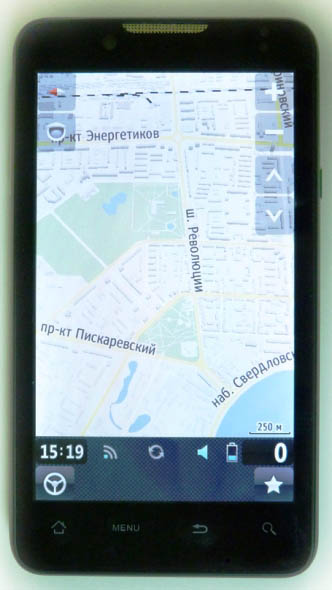
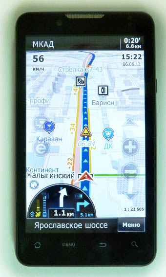
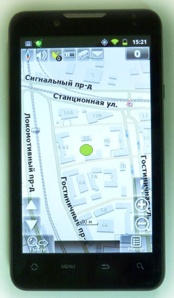
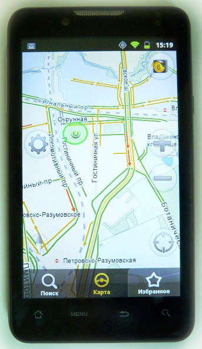
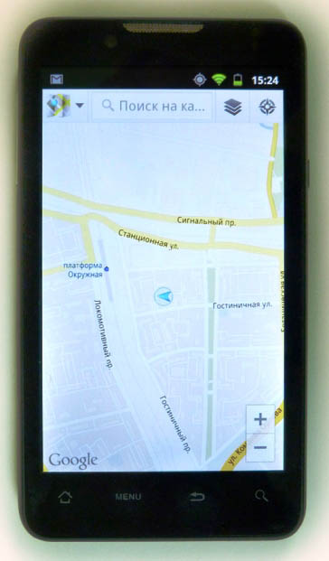

Обзор навигационных программ под ОС Android

Безусловное большинство смартфонов под управлением Android, доступных сегодня, оснащается GPS-приемником. А значит, даже самые бюджетные устройства годятся на роль альтернативы полноценному автомобильному навигатору. Подтверждает это изобилие программ навигации, доступных в каталоге Google Play.
Предназначение данного материала - ознакомить читателя с подробностями наиболее популярного навигационного ПО для смартфонов под управлением ОС Android. Для тестирования использовался смартфон Highscreen Yummy Duo. Причин выбрать именно его было несколько. Во-первых, диагональ экрана 4,3 дюйма оптимальна для работы с навигационными приложениями (чем больше дисплей, тем проще разобраться). А во-вторых, в Highscreen Yummy Duo используется новая аппаратная платформа от MTK, которая гарантирует корректную работу приложений даже в 3D-режиме без ошибок и зависаний.
Всего в обзоре приняли участие следующие навигационные программы: Прогород, СитиГИД, Sygic, Навител Навигатор, Яндекс. Навигатор, Google Навигация.
«Прогород» - навигационная программа для смартфона, обзор

ОСОБЕННОСТИ РАБОТЫ: установить последнюю версию «Прогород» на устройство с операционной системой Andriod можно как через Google Play (бывший Android Market), так и вручную, запустив .apk файл.
Интерфейс, возможности настройкиИнтерфейс навигационной программы «Прогород» не таит в себе никаких секретов – он прост и интуитивно понятен. Многие сходятся во мнении, что он несколько напоминает iGO.
Главное меню программы состоит из шести разделов, основные из них – «На карту», «Поиск», «Маршрут», «Настройки». В режиме работы с картой экран не перегружен ненужными сведениями. Кнопки изменения масштаба, регулировки наклона карты, и дополнительные индикаторы (компас, статус пробок) – полупрозрачные. Панель с системной информацией располагается в нижней части экрана, и лишь подсказка-предупреждение о предстоящем маневре несколько перекрывает видимую область.
Навигация «Прогород» на Android поддерживает пальцевое управление масштабированием и поворотом карты и трехмерное отображение объектов (используется OpenGL 3D). Программа автоматически изменяет масштаб в соответствии со скоростью движения. Возможно отображение карты в высококонтрастном режиме «Ночь».
Нажав на кнопку с изображением звездочки в правом нижнем краю экрана, пользователь откроет настраиваемое меню быстрого доступа к функциям, используемым чаще всего.
В соответствующем разделе меню доступны: настройки интерфейса в режиме отображения карты, опции построения маршрута, параметры быстродействия и т.д., вплоть до шрифтов. Возможности настроек программы весьма широки.
Особенности построения маршрута, сервис пробокНавигационная программа «Прогород» может генерировать маршрут, используя вычислительную мощность устройства, а при наличии Интернет-соединения маршрут просчитывается сервером. «Прогород» отправляет координаты точек старта и финиша на сервер, на котором хранится вся информация о дорожном движении. Сервер генерирует маршрут и отправляет его клиентскому устройству.
Пользователю на выбор предоставляется несколько вариантов маршрута: «Удобный» (по основным дорогам), «Простой» (наименьшее количество маневров), «Короткий». Точки начала и конца пути можно задавать по адресу или по координатам, при построении маршрута могут учитываться точки интереса или промежуточные точки, заданные пользователем, которые необходимо посетить.
Отличается навигация «Прогород» от других навигационных программ экономичным пробочным сервисом: данные о пробках загружаются только для прокладываемого маршрута, тогда как другие программы каждый раз скачивают информацию по всему городу. Таким образом и разница в затратах получается значительная – за то же время, за которое «Прогород» тратит 50 копеек, «Навител» скачивает трафика на 13 рублей, а «СитиГИД» - на 8 рублей.
Карты, система динамических обновленийКомпания «Сидиком Навигация» (создатели навигационной программы «Прогород») разрабатывает навигационные карты России сама. Карты других стран (Австрии, Беларуси, Испании, Италии, Казахстана, Кипра, Латвии, Литвы, Молдовы, Украины, Финляндии и Эстонии), предоставляются участниками Open Street Map.
Карты в навигации можно обновлять либо вручную, либо используя интерфейс самой программы. Кроме этого, для «Прогорода» доступен сервис динамических обновлений – небольшого размера (несколько килобайт) файл, ежедневно загружаемый с сервера, содержит наиболее актуальную информацию о состоянии дорог, временно перекрытых улицах, дорожных знаках, действующих в определенное время суток или в конкретные дни недели, и других факторах, которые могут повлиять на маршрут движения. Таким образом, карты остаются всегда актуальными, и на обновление карт не приходится тратить время и трафик.
Сервис динамических обновлений работает исключительно на территории России и только на собственных картах «Сидиком». Точек интереса (POI) на картах довольно много. Для удобства отображения они разбиты по категориям.
Дополнительные функцииВ навигационной программе «Прогород» удачно реализован сервис подсказок Junction View. Перед выполнением маневра на сложном перекрестке, пользователь видит фотореалистичную картинку с необходимым направлением движения. Примечательно, что данный сервис работает не только по Москве, но и на картах регионов.
Функция «Дополненная реальность» – еще одно отличие «Прогорода» от конкурентов. Этот сервис накладывает на изображение с камеры вашего Android-устройства полупрозрачную карту с обозначением улиц и значками точек интереса, которые находятся в пределах видимости.
В используемом для тестирования смартфоне с двумя SIM картами Highscreen Yummy Duo программа отрабатывала «Прогород» все функции.
РЕЗЮМЕ ДОСТОИНСТВА: ·Наличие системы динамических обновлений; ·Детальные карты собственной разработки; ·Поддержка 3D режима отображения карты; ·Наличие дополнительных функций (Junction View, «Дополненная реальность»). НЕДОСТАТКИ: Онлайн сервисы и Junction View доступны только для карт РоссииОБЩАЯ ОЦЕНКА: навигационная программа«Прогород» поддерживает большое количество ОС и постоянно развивается. Реализация Junction View, «Дополненной реальности» и системы динамических обновлений очень удачна. Радуют простой и понятный интерфейс в стиле iGO и трехмерные карты с высокой детализацией.
CityGuide - навигационная программа для смартфона, обзор

ОСОБЕННОСТИ РАБОТЫ Меню и настройкиГлавное меню навигации привычно для тех, кто работал с «СитиГИД» на отдельных устройствах-навигаторах. В нем присутствует «матрица» крупных значков со следующими пунктами: Фавориты, Поиск, Карта, Маршрут, Пробки, Сообщения, Функции и Настройки. Чуть ниже расположена крупная кнопка «поехали», а по бокам от нее - «назад» и «выход». Все пункты загружаются быстро, кроме того, программа адекватно реагирует на смену ориентации экрана.
Во вкладке «Фавориты» навигационной программы CityGuide производится настройка быстрого доступа к наиболее популярным пунктам назначения. Всего для заполнения предлагается 8 ячеек, которые можно заполнить вариантами вроде «дом», «дача» и т.д. «Поиск» соответственно включает пункты разных видов установки конечной точки следования.
Для ввода в интерфейсе «СитиГИД» имеется сразу четыре варианта: по стандартной клавиатуре QWERTY, с расположением букв по алфавиту, вариация телефонной клавиатуры с T9, а также побуквенный ввод. По мере ввода на клавиатуре остаются доступны только те буквы, которые могут содержаться в оставшихся вариантах вводимых слов.
Раздел навигации «Карта» открывает доступ к загруженным прежде картам с просмотром подробной информации о них и настройкой визуализации. Последнее подразумевает установку отображаемых информационных слоев, выбор 2D/3D вида, а также автоматическое масштабирование по ходу движения и некоторые дополнительные функции.
Во вкладке «Маршрут» программы «СитиГИД», как и следует из названия, отображается выбранный путь следования, кроме того, доступен просмотр легенды, загрузка нового маршрута, сохранение текущего и его изменение.
Меню «Пробки» позволяет установить вид их отображения, способ подключения к Сети и режим обновления. «Сообщения» в первую очередь используются для того, чтобы оповестить иных участников дорожного движения о различных замеченных инцидентах вроде аварии. В «Функциях» расположены всевозможные дополнительные опции, например, получение скриншота, вход в режим «стоянки», а также вызов помощи и полное отключение GPS.
Непосредственно «Настройки» навигационной программы CityGuide включают повторение многих пунктов из других разделов. Здесь меняется язык, устанавливаются кнопки на экране, выбирается голосовой помощник и сбрасываются параметры.
В работеРазработчики навигации «СитиГИД» сделали разумный ход и до того, как маршрут будет проложен, экран не переполнен различной дополнительной информацией. По умолчанию вверху слева отображается текущая скорость, а прямо под ней направление компаса. Внизу установлено значение текущего масштаба. В правой нижней части дисплея виден значок уровня сигнала GPS, а вверху расположен «светофор» с отметкой о том, насколько актуальной является информация на карте. Также демонстрируются дата и время.
По левой части экрана CityGuide вертикально установлены три кнопки: выбор точки маршрута, быстрое меню из шести и более настраиваемых пунктов и, наконец, вызов главного меню. С правой стороны находится переключатель вида 2D/3D, клавиши изменения масштаба, а также угла наклона вида для трехмерного представления. Режим слежения вызывается кнопкой по центру внизу.
На панели навигации отображается ближайший маневр с расстоянием до него. Менее крупная стрелка указывает следующий маневр, также приводится расстояние между ними. Клетчатый флаг показывает, сколько осталось проехать до пункта назначения. Голосовое сопровождение оставило двоякое впечатление. С одной стороны оно более информативно в сравнении с другими программами, а с другой, бывает не совсем уместно в городе с частыми маневрами.
Для того чтобы проложить маршрут нужно выбрать конечную точку, ее можно указать вводом адреса, выбором в «Фаворитах» или прямым указанием пальцем на карте. Сразу же обратим внимание на пробки, с учетом которых прокладывается маршрут. Технология, используемая в навигационной программе «СитиГИД», подверглась улучшению, например, теперь если на протяжении нескольких часов поступает информация о пробке, то она не «снимется» до тех пор, пока не перестанут поступать сигналы о ее существовании. Кроме того, данные отображаются по полосам движения, что является уникальной функцией программы.
Отдельного внимания заслуживает трехмерный режим навигации. Дома подробно проработаны и даже в некоторых случаях снабжены своими примечательными архитектурными элементами. Об исторических и просто выдающихся объектах и вовсе говорить не приходится – они отображены в полном соответствии со своим реальным видом.
В режиме перспективы мосты и дорожные развязки предстают в 3D, будучи чуть приподнятыми над дорогой. Так визуально гораздо проще сориентироваться и не перепутать сложную развязку с обычным перекрестком. Кстати, в приложении реализованы так называемые фоторазвязки, Junction View. Они показываются всплывающей картинкой с рисунком дороги и указанием маневра.
В используемом для тестирования смартфоне с двумя SIM картами Highscreen Yummy Duo программа отрабатывала «СитиГИД»» все функции.
РЕЗЮМЕ ДОСТОИНСТВА:· Множество настроек;
· Удобное меню навигации;
· Подробная трехмерная карта;
· Фоторазвязки
· Сервис пробок с разделением полос.
НЕДОСТАТКИ:· Небольшие значки на экране;
· Вывод излишне подробной дополнительной информации
· Периодические ошибки при расчете маршрута
ОБЩАЯ ОЦЕНКА: навигационная программа «СитиГИД» для Android мало чем отличается от версии для других ОС. Помимо привычных функций, встречаемых в других аналогичных разработках, приложение может похвастаться особым вниманием к деталям вроде дорожной разметки, прохождения перекрестков и помощи в визуальном представлении сложных дорожных развязок.
«Навител Навигатор 5» - навигационная программа для смартфона, обзор

ОСОБЕННОСТИ РАБОТЫ: навигационная программа «Навител Навигатор» – живая классика российского рынка навигации, которая прежде всего известна своими предельно точными и часто обновляемыми картами. С приходом программы на мобильные платформы она получила улучшенный интерфейс, приобрела новый алгоритм прокладки маршрутов и стала вполне себе современным навигационным предложением для смартфонов или планшетов.
Меню и интерфейсС сожалением приходится констатировать, что «Навителу» все еще не удается быть и умной, и красивой навигационной программой. Точность карт обратно пропорциональна исполнению интерфейса, который едва ли не интуитивно призывает использовать стилус (и это несмотря на то, что тест проводился на 4,3-дюймовом смартфоне). На главном экране расположено множество кнопок, хотя разобраться в них не составит труда – в большинстве случаев их назначение понятно по значкам. Разве что хотелось бы их чуть больший размер, так как порой в динамичной обстановке по ним попросту не попадаешь.
Винить разработчиков в неоправданном максимализме нельзя, ведь они изначально вывели все доступные кнопки на экран. Любую из них (или даже все) можно убрать через настройки. Все-таки, далеко не все пользователи навигации желают копаться в опциях и выяснять, какие кнопки в программе есть, если часть из них изначально убрана с экрана. Связь со спутниками отображается в четырех режимах: «выключено», «нет соединения», «плохое» и «хорошее». Кстати, почти для всех иконок доступна настройка показа, например для аккумулятора – шесть вариантов подсказки.
В работеЧтобы выбрать пункт назначения в навигации, предлагается вручную набрать адрес, сориентироваться по списку ранее сохраненных пунктов или же пройтись по POI - точкам интереса. Вариантов последних довольно много, особую любовь «Навител», по всей видимости, питает к выделению разных видов заведений общепита. После того, как адрес указан, необходимо выбрать из двух кнопок: «поехать» и «начать». Да, с простотой донесения информации у «Навитела» еще есть определенные проблемы. Раскроем интригу – второй вариант означает самостоятельный выбор начальной точки маршрута.
Как и подобает мощной навигационной программе, «Навител» позволяет изучить полученный путь следования и осуществить симуляцию для виртуальной поездки. Непосредственно в картах было устранено множество недоработок по сравнению с прошлыми версиями программы. Например, «Навител» научился определять наиболее вероятные адреса исходя из местоположения пользователя. Это значит, что при выборе определенной улицы в городе вас никак не перенаправят в одноименную деревню.
Если предполагается поездка в здание определенной организации, то его название можно задать в строке маршрута. Однако сориентироваться непосредственно на карте не получится, так как подписи имеющихся в отдельном доме компаний отсутствуют. Касательно алгоритма прокладывания маршрута сложно заметить ощутимые изменения, но это скорее вызвано и без того весьма качественной работой инструмента в предыдущих релизах «Навитела». Навигационная программа в равной степени уверенно чувствует себя как в городской среде, так и при необходимости вывода загородных маршрутов.
Во время движения, конечно же, работает голосовой помощник. Простыми предупреждениями он не ограничивается, также обращается внимание на предстоящие опасные повороты в случае наличия таковых. Нашлось место и таким полезным моментам, как предупреждение о камерах дорожных служб, превышении скорости на участке и отображении дорожных знаков.
На главном экране навигации можно заметить пиктограмму текстовых сообщений. Она действительно свидетельствует о возможности отправки SMS, но весьма оригинальной. Мы можем обмениваться текстовыми сообщениями с другими обладателями «Навитела», отправляя сообщения со своими координатами.
Непременный «must have» для программы навигации – наличие сервиса пробок. В «Навителе» карта формируется за счет данных, собираемых прямо с навигаторов пользователей. Причем обновление сведений осуществляется каждые две минуты. Впрочем, для экономии объема передаваемых данных можно настроит и промежуток в 5, 10 или 30 минут. Конечно, достоверность данных зависит от числа автомобилистов.
В пятой версии навигационной программы «Навитела» появилось порядочное количество улучшений, к примеру, добавились так называемые «события». Это такие важные сведения, как данные о ДТП, камерах слежения, дорожных работах и иные предупреждения. Причем есть разделение ДТП и аварий в зависимости от того, произошло происшествие с участием нескольких машин или на полосе стоит лишь одна аварийная машина.
Улучшению подверглось социальное взаимодействие. К типам событий можно прибавлять текстовые заметки, а они в свою очередь доступны для просмотра и комментирования другими пользователями. Начали заметно обновляться POI, которые отныне снабжаются дополнительной информацией с указанием даты последних изменений. Например, доступен просмотр стоимости бензина на какой-либо заправке. Сведения приводятся далеко не по всем объектам, но, по всей видимости, информационное наполнение будет расти со временем.
Другим уместным новшеством стал поиск по перекресткам, когда задается определенная улица и осуществляется просмотр всех улиц, с которыми она пересекается. Далее прокладывается маршрут к необходимой точке. Доработке подвергся поиск, в нем при вводе улиц отныне отображается район ее нахождения.
В используемом для тестирования смартфоне с двумя SIM картами Highscreen Yummy Duo программа отрабатывала «Навител Навигатор» все функции.
РЕЗЮМЕ ДОСТОИНСТВА:· Подробные карты;
· Качественное прокладывание маршрута;
· Поддержка сервиса пробок;
· Гибкая настройка главного экрана.
НЕДОСТАТКИ:· Периодические некритичные ошибки в работе;
· Устаревший неудобный интерфейс
ОБЩАЯ ОЦЕНКА: в итоге навигационная программа «Навител» показал себя как достойный представитель семейства Android-навигаторов. В нем обнаружились самые важные дополнительные опции вроде отображения событий или дополнительной информации POI. По многим признакам видно, что создатели программы работают над ее совершенствованием, но и в нынешнем состоянии «Навител» соответствует требованиям пользователей «с претензией».
«Яндекс.Навигатор» - навигационная программа для смартфона, обзор

ОСОБЕННОСТИ РАБОТЫ: бесплатный сыр далеко не всегда означает наличие некого подвоха, особенно если речь идет о навигационном сервисе «Яндекс. Навигатор». Это продукт, предлагающий работу исключительно при наличии доступа в Интернет, более чем подходит для использования в качестве программы навигации с базовым набором функций. Заранее предупредим, что если при попытке скачать клиент через Google Play вы получили сообщение о несовместимости со своим устройством, расстраиваться не стоит – просто найдите и загрузите установочный файл формата APK.
Меню и интерфейсПосле установки нам предлагают наглядное мини-обучение, где вкратце рассказывается о задачах трех кнопок главного меню. Отсюда мы можем добавить точку на карте в «Избранное», посмотреть свое текущее местоположение и начать поиск адреса или организации. На экране с виртуальной картой содержится минимальный набор управляющих элементов. Присутствуют кнопки изменения масштаба, но к счастью «Яндекс» предусмотрел масштабирование посредством жестов мультитач.
Если сделать одиночное короткое касание экрана навигации, то появится кнопка настройки программы и рассмотренная выше тройка кнопок. Длительное касание приведет к появлению подробной информации по заданной точке на карте, с возможность добавления в избранное и началом прокладки маршрута. Отметим, что любому объекту во вкладке избранного можно присвоить произвольное имя.
Как и подобает онлайн-помощнику, «Яндекс. Карты» в режиме реального времени докладывают о дорожной обстановке. Если коснуться зеленого значка уведомления, то появится подсказка с указанием типа сведений (например, ДТП), а также времени его добавления.
НастройкиВ настройках навигационной программы «Яндекс. Навигатор» нашлось место для выбора вида карты – схема, спутник или народная; включения или выключения ночного режима; выбора типа отмечаемых на карте событий; и выбора голоса навигатора – мужского или женского. Вдобавок, в настройках доступна очистка кеша и истории поездок. Не совсем понятно, зачем вместе с удалением истории происходит очистка и всех избранных точек.
В работеДля начала несколько слов о случаях, когда нам просто нужно найти поблизости заведение определенного типа, так называемую «точку интереса». Сервис умеет производить поиск по адресу, названию или выбранному типу места. Последний вариант подразумевает вывод наглядного меню со значками, из которого мы и выбираем, что нужно найти – ресторан, АЗС, почту или гостиницу. Не совсем понятно, почему объекты расположены в хаотичном, а не алфавитном порядке.
Переход в наиболее важный для нас режим навигации подразумевает для начала выбор конечной точки маршрута. Жмем кнопку «Маршрут сюда», после чего осуществляется прокладка маршрута следования. На выбор предлагается несколько вариантов маршрутов, они, конечно же, учитывают ситуацию с пробками на дорогах. Заранее выводятся сведения с предположительным временем в дороге и расстоянием. Если ваше движение отклонилось от заданного маршрута, программа автоматически перестроит его с учетом новой отправной точки. Работает прокладка быстро, единственное замечание – отсутствие возможности выбрать произвольную начальную точку, чтобы спланировать поездку заранее.
Особых или частых ошибок в предлагаемых маршрутах предложенных «Яндекс. Навигатор» замечено не было, разве что в отдельных случаях программа настаивала на проезде «под кирпич» или не учитывала предложение вести часть пути по встречной полосе. Впрочем, последний момент простителен, так как в «Яндекс.Картах» отсутствует поддержка полос движения – дорога показывается сплошной широкой линией.
Функциональных особенностей, как таковых, в «Яндекс. Навигатор» немного. Например, есть голосовые подсказки, ночной режим и предупреждение о камерах ГИБДД. К слову, приложение к настоящему моменту поддерживает кеширование карт, поэтому о дорогостоящем мобильном трафике можно особо не беспокоиться. Отображаются карты как в режиме 2D, так и в 3D. Заранее предупредим, что сейчас навигационный сервис не поддерживает предоставление панорамных снимков, а также не способен прокладывать путь на основе общественного транспорта. Обе этих функции пока доступны только в «Яндекс.Картах».
Относительно географической базы возможности «Яндекс.Навигатора» ограничиваются территорией России, Украины и Беларуси, с поддержкой около трех сотен городов. Напоследок нельзя не рассмотреть более подробно отображение пробок. Они доступны жителям Москвы, Киева, Санкт-Петербурга, ряда других городов России и Украины, а также в Минске, Алматы и Астане. У «Яндекса» есть обширная база для сборка сведений о дорожных заторах.
В используемом для тестирования смартфоне с двумя SIM картами Highscreen Yummy Duo программа отрабатывала «Яндекс. Навигатор» все функции.
РЕЗЮМЕ ДОСТОИНСТВА:· Простой интерфейс;
· Поддержка пробок;
· Предложение нескольких вариантов маршрута;
· Динамичное изменение маршрута;
· Поиск «точек интереса»;
· Поддержка кэша карт.
НЕДОСТАТКИ:· редкие ошибки прокладки пути;
· отсутствие отображения полос.
ОБЩАЯ ОЦЕНКА: навигационный сервис «Яндекса» находится только в начале своего пути, сейчас для работы предлагается его версия 1.02. Проделанная работа и общая направленность сервиса видны невооруженным взглядом. В первую очередь, разработка направлена на тех, кому не нужны десятки дополнительных возможностей платных навигационных программ. С другой стороны, также очевиден прицел на максимально широкую аудиторию – об этом говорит минимализм интерфейса и возможностей. Впрочем, в совокупности это и формирует образ «Яндекс.Навигатор» в качестве доступного и непритязательного подручного средства прокладки маршрутов.
«Google Навигация» - навигационная программа для смартфона, обзор

ОСОБЕННОСТИ РАБОТЫ: навигация посредством собственного сервиса Google уже давно знакома всем пользователям Android. Соответствующая программа предустановлена по умолчанию в каждом аппарате – покупать или загружать что-то дополнительно не придется. Правда, в некоторой степени расплачиваться за использование приложения пользователь все-таки вынужден. Выражается это в необходимости постоянного подключения к Интернету, без него навигатор вообще откажется запускаться. Впрочем, Навигация умеет кешировать файлы и минимизировать расход трафика при повторных поездках по маршруту. Большим плюсом является наличие у навигации Google собственных спутниковых карт. Ещё из преимуществ - поддержка панорамных снимков, поэтому заблудиться и в родной стране, и за рубежом не получится.
Отображение карт в «Google Навигация» происходит в двух вариантах: классическая схематичная картинка (для тех кто экономит трафик) и представление по фотографиям со спутника (для тех, у кого безлимитный Интернет). Наиболее действенной выглядит комбинация обоих вариантов, чтобы было проще ориентироваться на незнакомой территории. Однако, справедливости ради, скажем, что с покрытием по России у продукта Google пока наблюдаются большие проблемы. Если вы не являетесь жителем Питера или Москвы, то, скорее всего, карта вашего города будет не слишком подробной и не очень актуальной.
Если же вы подпадаете под зону покрытия (см. выше), то будьте готовы получить добротное сопровождение как в автомобиле, так и для пешей или велосипедной прогулки. Здесь подчеркнем предельно универсальный характер навигации, ведь она способна прокладывать маршрут сугубо с использованием общественного транспорта.
Отвлечемся на мгновение от «дорожной» направленности «Google Навигации». Дело в том, что он также способен предоставлять внутренние схемы крупных зданий вроде аэропортов. Поверьте, после нескольких полетов без столь полезной функции становится даже немного неуютно.
Теперь возвращаемся в наши города и обнаруживаем, что в Навигаторе крайне привлекательно реализован поиск точек POI, кои присутствуют в достаточно большом количестве. Конечно, с удалением от мегаполисов их количество предлагаемое «Google Навигацией» резко сокращается.
Отметим, что по сути Навигатор для Android не является самостоятельным продуктом, а выступает лишь в качестве дополнительной функции программы «Карты Google». Хотя в Android даже в предустановленном варианте он обязательно присутствует как приложение с самостоятельным ярлыком.
Итак, попытаемся начать наш выбор маршрута. Как выяснилось, Навигатор прекрасно ориентируется по адресам, а также просто названиям магазинов или компаний. Задавать искомый адрес разрешается как ручным вводом, так и голосом. Что и говорить, довольно предусмотрительный вариант для водителя, который должен уверенно держать руль обеими руками.
Сам интерфейс «Google Навигации» во время навигации насколько привычен после общения с навигаторами, настолько же радует своей аскетичностью. Причем в данном случае Google показала, что минимализм не идет во вред программе. Хотя компания могла бы предусмотреть возможность самостоятельной настройки элементов для отображения, как это происходит в других навигационных приложениях.
Вверху располагается панель с указанием названия улицы, если к ней прикоснуться - открывается карта с указанием всех маневров на карте. Дополнительно позволяется выводить все повороты списком в текстовом виде.
Если выбрать схему с указанием всех пробок, то с нее мы также получим возможность проложить альтернативные маршруты и сравнить их по длительности времени и расстоянию. Доступна установка приоритетов дорог. Например, если водитель желает сэкономить, можно задать приоритет бесплатных маршрутов, когда за проезд по дороге не придется платить.
Во время поездки нас сопровождает безупречная система подсказок. Работает она без проблем, но несколько утомляет отсутствие возможности сменить голос на другой вариант озвучивания.
После того, как мы провели с программой «Google Навигация» не один день, сам собой напрашивается вывод о грамотном подходе ее разработчиков. Они не стали буквально атаковать пользователя всеми возможностями Навигатора. Вместо этого на поверхности находятся только самые необходимые опции, а расширенные настройки спрятаны в недрах пунктов меню. Поэтому требовательному пользователю не стоит оценивать Навигатор сугубо по первому впечатлению.
В используемом для тестирования смартфоне с двумя SIM картами Highscreen Yummy Duo программа отрабатывала «Google Навигация» все функции.
РЕЗЮМЕ ДОСТОИНСТВА:· Бесплатный доступ к программе;
· Голосовой набор адреса;
· Поддержка пробок;
· Спутниковые карты;
· Поддержка панорамных снимков;
· Навигация для пешеходов
НЕДОСТАТКИ:· Необходимость подключения к Интернету;
· Есть проблемы с актуальностью и подробностью карт
· Много ошибок при маршрутизации
ОБЩАЯ ОЦЕНКА: навигатор на основе программы «Google Навигация» получился действительно интересной разработкой, которая как минимум достойна того, чтобы быть опробованной. Впрочем, если у вас есть любой смартфон с Android, вы неминуемо хотя бы раз попробуете воспользоваться услугами Навигатора. О внимании общественности к нему говорит хотя бы тот факт, что в день выпуска на бирже упала стоимость акций таких компаний, как Garmin и Tom-Tom. Реакция получилась логичной, так как Google на бесплатной основе предоставляет доступ к собственным базам карт и навигации на машине, общественном транспорте и для пешеходов. В случае c Россией самой серьезной проблемой выступает территориальное покрытие.